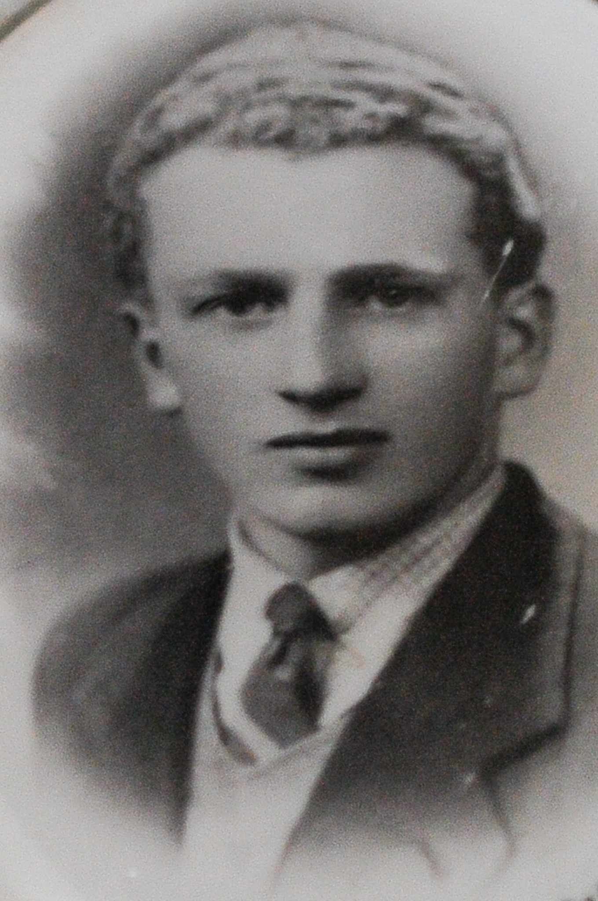

Fai play per ascoltare la narrazione
Daniele nasce a Calvisano il 9 ottobre 1923. I suoi genitori sono Battista e Giulia Savoldi. Nel 1936 risulta prosciolto dall’obbligo scolastico, poi lavora come operaio presso l’officina Cibaldi a Brescia. Subisce un infortunio sul lavoro, si fa male ad una gamba. A causa di questa ferita a Daniele viene rilasciato un certificato medico che lo dichiara non idoneo al combattimento, ma lui decide di partire ugualmente per la guerra. Organizza una merenda con i suoi amici per salutarli, prima della sua partenza. Alla stazione a salutarlo c’è anche il suo nipotino, Daniele lo abbraccia stretto stretto, prima di partire. Viene inviato sul fronte greco, a Cefalonia. Sopravvissuto all’eccidio della Divisione Acqui, Daniele viene imbarcato (o meglio stivato) con altri 840 soldati italiani sul piroscafo Ardena il 28 settembre 1943. L’Ardena è un piroscafo greco che era stato affondato nel 1941, ma che viene rimesso a galla e riparato in qualche modo per destinarlo al trasporto dei militari prigionieri da trasportare nei campi di lavoro in Germania. L’Ardena parte da Argostoli con il suo carico umano, ma a circa un miglio dalla costa entra in collisione con una mina sganciata da un aereo anglo-americano e affonda in pochi minuti. Daniele muore insieme ad altri 720 soldati italiani. L’allora vigile Facchini, in servizio presso il Comune di Calvisano, porterà alla famiglia la tragica notizia della sua morte.
